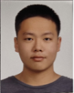
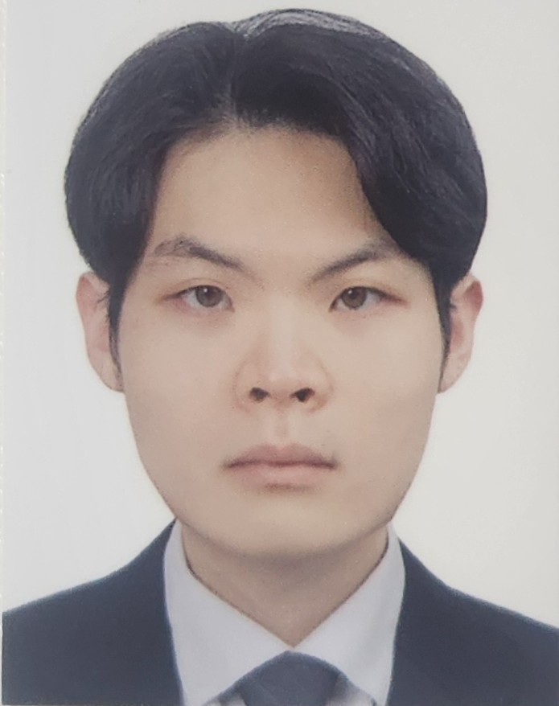
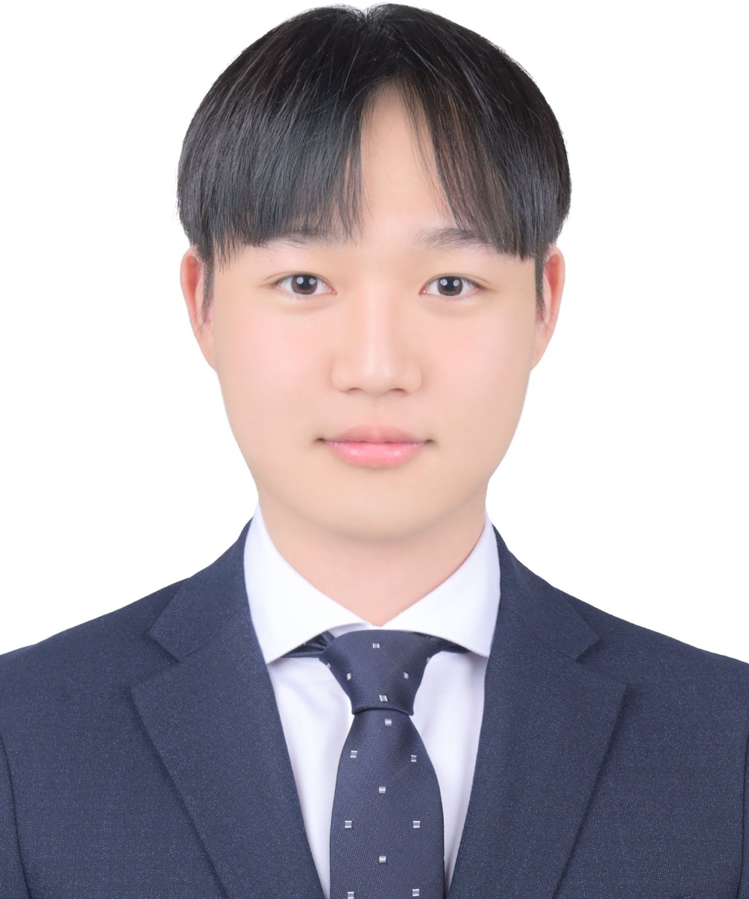
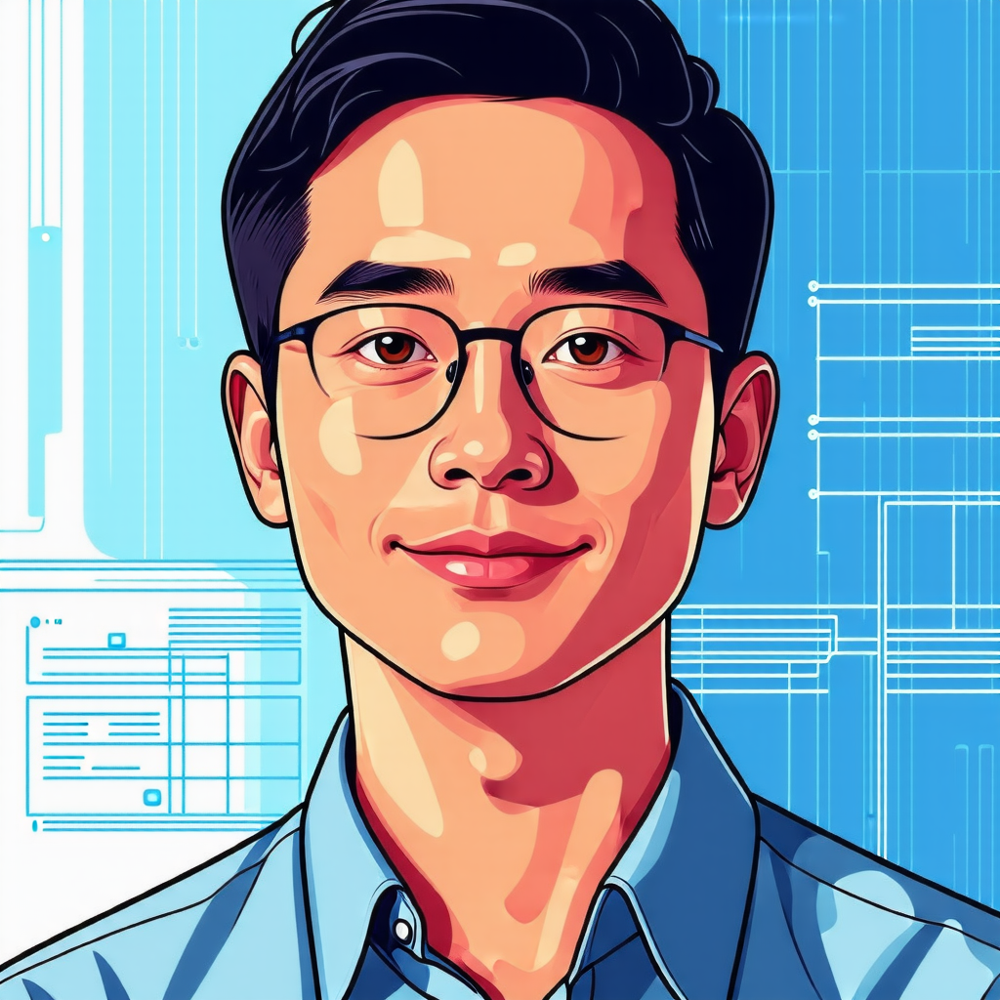
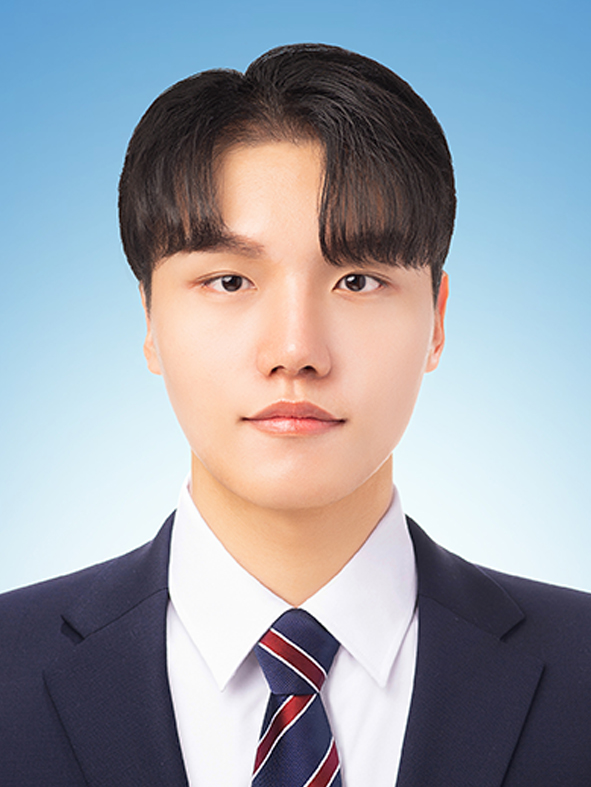
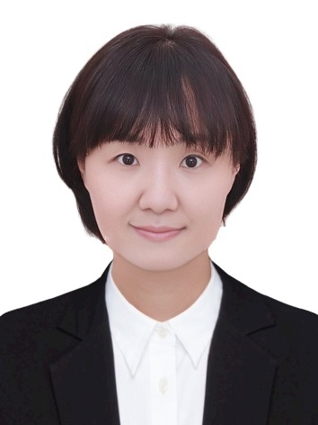
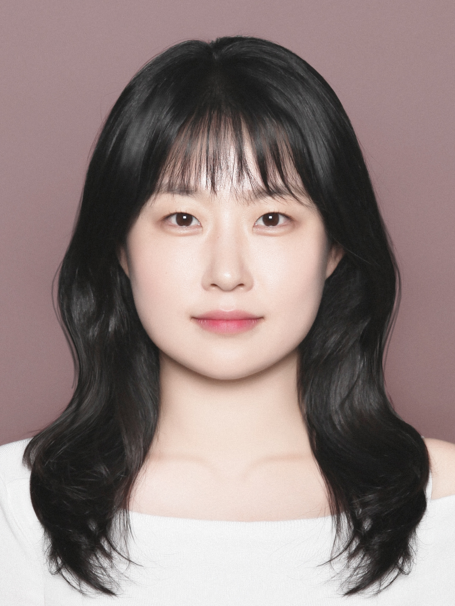
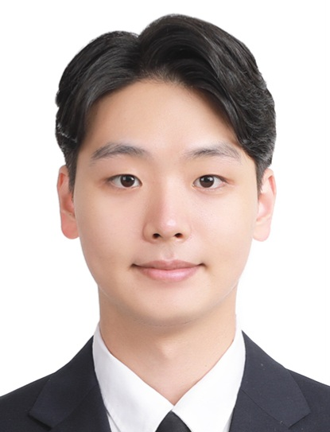

members
Members at Rottoda
Info
- 📗: a full-time student
- 👨💼or👩💼: a part-time student (Employed)
PhD Course
- None
Researchers
Post-master researcher
- 고동현 (Donghyun Ko) 👨💼 ➡ Contract terminated in Oct. 2025
Master Course
Commencement in 2026
Commencement in 2025
Commencement in 2024
- 권태준 (TaeJun Kwon) 📗 ➡ Graduated in Feb. 2026, remote part-time contract with Rottoda
- 이은정 (Eunjung Lee) 📗 ➡ Graduated in Feb. 2026, went to 대구교육대학교 박사과정
- 이현규 (Hyungyu Lee) 👨💼 ➡ Graduated in Feb. 2026, went to POSCO
- 장지은 (Jieun Jang) 📗 ➡ Graduated in Feb. 2026
- 정희명 (HuiMyeong Jeong) 👨💼
Commencement in 2023
- 김은주 (JuJu Kim) 👩💼 ➡ Graduated in Aug. 2025, went to 한국로봇산업진흥원
- 나윤희 (Yun Hui Na)📗 ➡ Graduated in Aug. 2025, went to 경북대학교 첨단정보통신융합산업기술원
- 노광현 (Kwang Hyeon Ro)👨💼 ➡ Graduated in Feb. 2026, went to NUC 전자
- 박종민 (Jongmin Park)👨💼 ➡ Graduated in Aug. 2025
- 우승준 (Seung Jun Woo)👨💼 ➡ Graduated in Feb. 2024, went to 이음기술
- 조현우 (Hyeonwoo Cho)👨💼 ➡ Graduated in Feb. 2026, went to 한국지능정보사회진흥원 (NIA)
- 탁은영 (EunYeong Tak)📗 ➡ Graduated in Aug. 2025
- 한영민 (Youngmin Han)👨💼 ➡ Graduated in Feb. 2024, went to 에이디엔이노텍
구형모 (Hyungmo Koo) 📗

- 관심분야: Big data, Deep Learning, Collaborative Robot
최재웅 (Jaewoong Choi) 📗

- 관심분야: Imitation Learning, Dexterous Manipulation
손건희 (Gunhee Son) 📗

- 관심분야: Vision-Language-Action, Imitation Learning
- 개인 홈페이지
- 참고: 학부 연구생
고동현 (Donghyun Ko) 👨💼
- 관심분야: Imitation Learning
김효성 (Hyosung Kim) 📗
- 관심분야: ROS, 멀티모달 센싱
이준희 (Edward Lee) 📗
- 관심분야: 로봇 빅데이터, ROS
정윤석 (Yoonseok Jeong) 👨💼
- 관심분야: 가상환경 기반 로봇 실증, 검증기술
- 재직기관: 한국로봇산업진흥원
이시명 (Simyung Lee) 👨💼

- 관심분야: 프로그래밍
- 재직기관: 경북대학교 해양과학연구소
권태준 (TaeJun Kwon) 📗

- 관심분야: 로봇 그리퍼 가상화 및 딥러닝 적용
이은정 (Eunjung Lee) 📗

- 관심분야: 드론 촬영 영상의 OpenCV 기반 데이터 처리 및 분석
- 졸업 후 재직기관: 대구교육대학교
이현규 (Hyungyu Lee) 👨💼
- 관심분야: 스마트 팩토리
- 졸업 후 재직기관: POSCO
장지은 (Jieun Jang) 📗

- 관심분야: 터치 데이터 기반 사용자 판별법 개발
정희명 (HuiMyeong Jeong) 👨💼
김은주 (JuJu Kim) 👩💼
- 관심분야: 3대산업분야의 스마트화 로봇공정 구축 및 공정관련요소 데이터분석
- 졸업 후 재직기관: 한국로봇산업진흥원
나윤희 (Yun Hui Na)📗
- 관심분야: Haptics, 기술사업화
- 졸업 후 재직기관: 경북대학교 첨단정보통신융합산업기술원
노광현 (Kwang Hyeon Ro)👨💼
- 관심분야: 햅틱 기술을 활용한 소비자 행태 분석 및 UX개선
- 졸업 후 재직기관: NUC전자
박종민 (Jongmin Park)👨💼

- 관심분야: Haptics, ML
조현우 (Hyeonwoo Cho)👨💼
- 관심분야 : 클라우드 분야 (전환, 성과, 정책 등)
- 졸업 후 재직기관: 한국지능정보사회진흥원
탁은영 (EunYeong Tak)📗
- 관심분야 : Haptics, Robotics